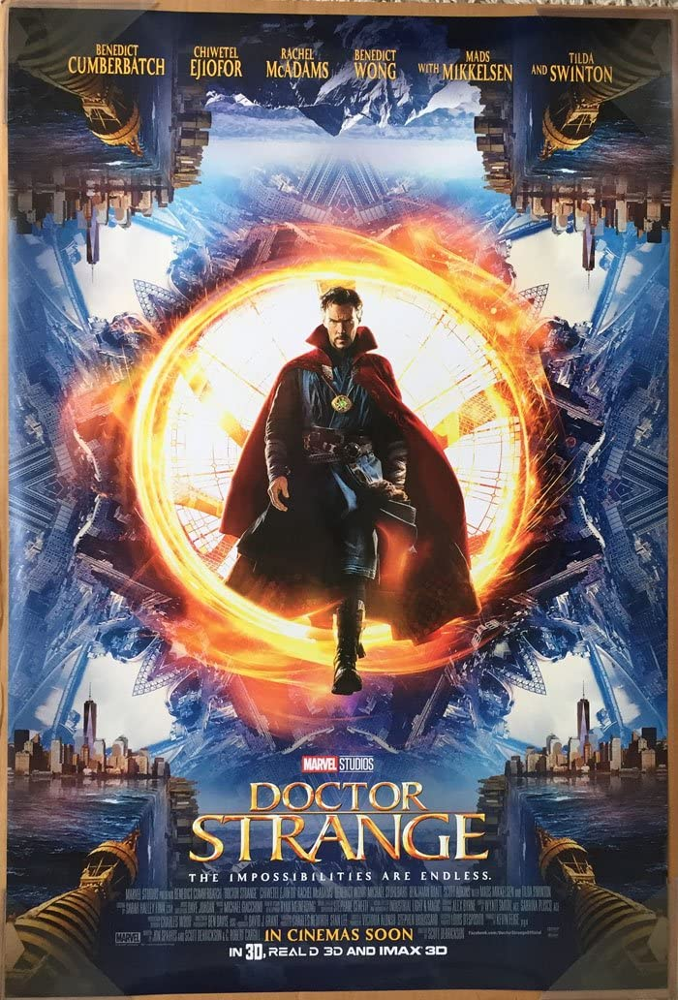

About
Hi!
Welcome to my own personal page, in which You are able to observe my favorite TV series and Movies.
I have indicated title, year of the first release (whether it is first season of series or first
movie from whole movie series), also brief information about them (please don't call police, cause
all information is extracted from IMDB or Wikipedia, I don't want to go to jail due to copyright
issues...).
In addition you are able to select each series or film on the poster which will navigate user to the
separate page, which will provide more information about selected item.
Lastly, on the list user is able to find all sort of types of films and series, thus, do not judge
my selections...
I mean it, don't judge or you will be found...
Have fun!
Films
Doctor Strange (2016)
Information
Doctor Strange is a 2016 American superhero film based on the Marvel Comics character of the same name. Produced by Marvel Studios and distributed by Walt Disney Studios Motion Pictures, it is the 14th film in the Marvel Cinematic Universe (MCU). The film was directed by Scott Derrickson from a screenplay he wrote with Jon Spaihts and C. Robert Cargill, and stars Benedict Cumberbatch as neurosurgeon Stephen Strange along with Chiwetel Ejiofor, Rachel McAdams, Benedict Wong, Michael Stuhlbarg, Benjamin Bratt, Scott Adkins, Mads Mikkelsen, and Tilda Swinton. In the film, Strange learns the mystic arts after a career-ending car crash.
Information
Forrest Gump is a 1994 American comedy-drama film directed by Robert Zemeckis and written by Eric Roth. It is based on the 1986 novel of the same name by Winston Groom and stars Tom Hanks, Robin Wright, Gary Sinise, Mykelti Williamson and Sally Field. The story depicts several decades in the life of Forrest Gump (Hanks), a slow-witted and kindhearted man from Alabama who witnesses and unwittingly influences several defining historical events in the 20th century United States. The film differs substantially from the novel.
Information
The Godfather is a 1972 American epic crime film[2] directed by Francis Ford Coppola, who co-wrote the screenplay with Mario Puzo, based on Puzo's best-selling 1969 novel of the same name. The film stars Marlon Brando, Al Pacino, James Caan, Richard Castellano, Robert Duvall, Sterling Hayden, John Marley, Richard Conte, and Diane Keaton. It is the first installment in The Godfather trilogy. The story, spanning from 1945 to 1955, chronicles the Corleone family under patriarch Vito Corleone (Brando), focusing on the transformation of his youngest son, Michael Corleone (Pacino), from reluctant family outsider to ruthless mafia boss.
Interstellar (2014)

Information
Interstellar is a 2014 epic science fiction film co-written, directed and produced by Christopher Nolan. It stars Matthew McConaughey, Anne Hathaway, Jessica Chastain, Bill Irwin, Ellen Burstyn, and Michael Caine. Set in a dystopian future where humanity is struggling to survive, the film follows a group of astronauts who travel through a wormhole near Saturn in search of a new home for mankind.
Pulp Fiction (1994)

Information
Pulp Fiction is a 1994 American black comedy crime film written and directed by Quentin Tarantino, who conceived it with Roger Avary.[4] Starring John Travolta, Samuel L. Jackson, Bruce Willis, Tim Roth, Ving Rhames, and Uma Thurman, it tells several stories of criminal Los Angeles. The title refers to the pulp magazines and hardboiled crime novels popular during the mid-20th century, known for their graphic violence and punchy dialogue.
Saving Private Ryan (1998)

Information
Saving Private Ryan is a 1998 American epic war film directed by Steven Spielberg and written by Robert Rodat. Set during the Invasion of Normandy in World War II, the film is known for its graphic portrayal of war, especially its depiction of the Omaha Beach assault during the Normandy landings. The film follows United States Army Rangers Captain John H. Miller (Tom Hanks) and his squad (Tom Sizemore, Edward Burns, Barry Pepper, Giovanni Ribisi, Vin Diesel, Adam Goldberg, and Jeremy Davies) as they search for a paratrooper, Private first class James Francis Ryan (Matt Damon), the last surviving brother of four, the three other brothers having been killed in action.
Spider-Man: No Way Home (2021)

Information
Spider-Man: No Way Home is a 2021 American superhero film based on the Marvel Comics character Spider-Man, co-produced by Columbia Pictures and Marvel Studios and distributed by Sony Pictures Releasing. It is the sequel to Spider-Man: Homecoming (2017) and Spider-Man: Far From Home (2019), and the 27th film in the Marvel Cinematic Universe (MCU). The film was directed by Jon Watts and written by Chris McKenna and Erik Sommers. It stars Tom Holland as Peter Parker / Spider-Man alongside Zendaya, Benedict Cumberbatch, Jacob Batalon, Jon Favreau, Jamie Foxx, Willem Dafoe, Alfred Molina, Benedict Wong, Tony Revolori, Marisa Tomei, Andrew Garfield, and Tobey Maguire.
Information
Spotlight is a 2015 American biographical drama film directed by Tom McCarthy and written by McCarthy and Josh Singer.[5][6] The film follows The Boston Globe's "Spotlight" team, the oldest continuously operating newspaper investigative journalist unit in the United States,[7] and its investigation into cases of widespread and systemic child sex abuse in the Boston area by numerous Roman Catholic priests. Although the plot was original, it is loosely based on a series of stories by the Spotlight team that earned The Globe the 2003 Pulitzer Prize for Public Service.
Harry Potter (2001 - 2011)

Information
Harry Potter is a film series based on the eponymous novels by J. K. Rowling. The series is distributed by Warner Bros. and consists of eight fantasy films, beginning with Harry Potter and the Philosopher's Stone (2001) and culminating with Harry Potter and the Deathly Hallows – Part 2 (2011).[2][3] A spin-off prequel series that is planned to consist of five films started with Fantastic Beasts and Where to Find Them (2016), marking the beginning of the Wizarding World shared media franchise.[4]
How To Train Your Dragon (2010)

Information
How to Train Your Dragon is a 2010 American computer-animated action fantasy film loosely based on the 2003 book of the same name by Cressida Cowell, produced by DreamWorks Animation and distributed by Paramount Pictures. The film was directed by Chris Sanders and Dean DeBlois from a screenplay by Will Davies, Sanders, and DeBlois, and stars the voices of Jay Baruchel, Gerard Butler, Craig Ferguson, America Ferrera, Jonah Hill, Christopher Mintz-Plasse, T.J. Miller, and Kristen Wiig. The story takes place in a mythical Viking world where a young Viking teenager named Hiccup aspires to follow his tribe's tradition of becoming a dragon slayer.